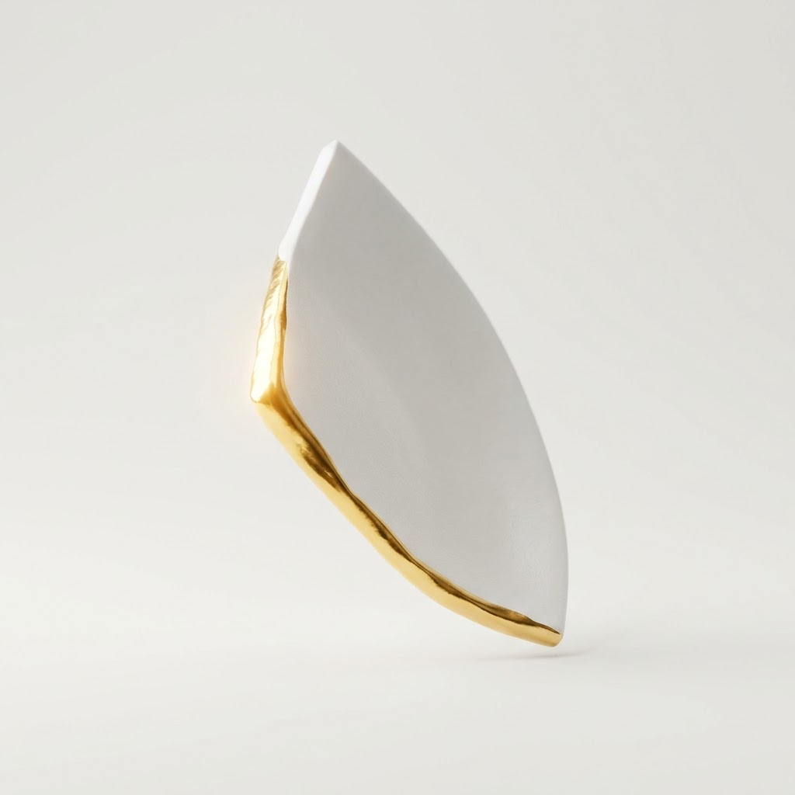

The Art of the Mend
We believe that software, like life, is an ongoing process of refinement. Perfection is an illusion, but resilience and continuous improvement are the true markers of craft.
Kintsugi meets Kaizen
The name "KintsuKai" is a synthesis of two profound Japanese philosophies. Kintsugi teaches us to embrace flaws, repairing broken pottery with gold to highlight the history of the object rather than disguising its damage.
Kaizen translates to "change for the better", a mindset of continuous, incremental improvement. Together, they form our foundational belief: transparent iteration creates unbreakable systems.

Principles of Practice
Learn from Failure
Bugs are not blemishes, they are the blueprint for a stronger foundation. We document our missteps transparently, turning fragile code into robust architecture.
Start Small
Massive overhauls breed chaos. We focus on microscopic, deliberate changes. Small, focused commits ensure precision and maintain the integrity of the whole.
Grow with Feedback
Software is a dialogue. We build tight feedback loops with our community, ensuring every mend and feature is guided by actual human needs and experiences.